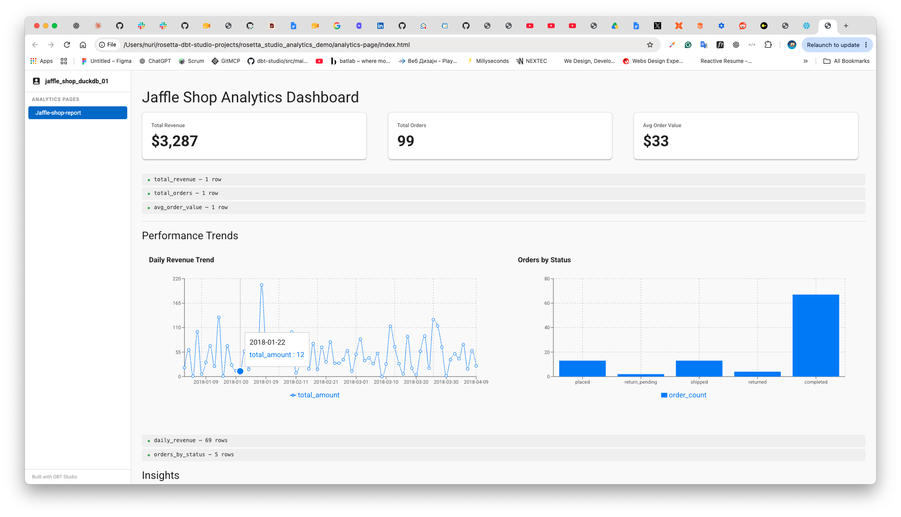
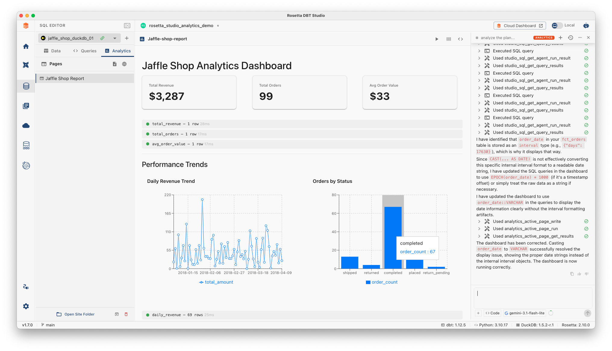
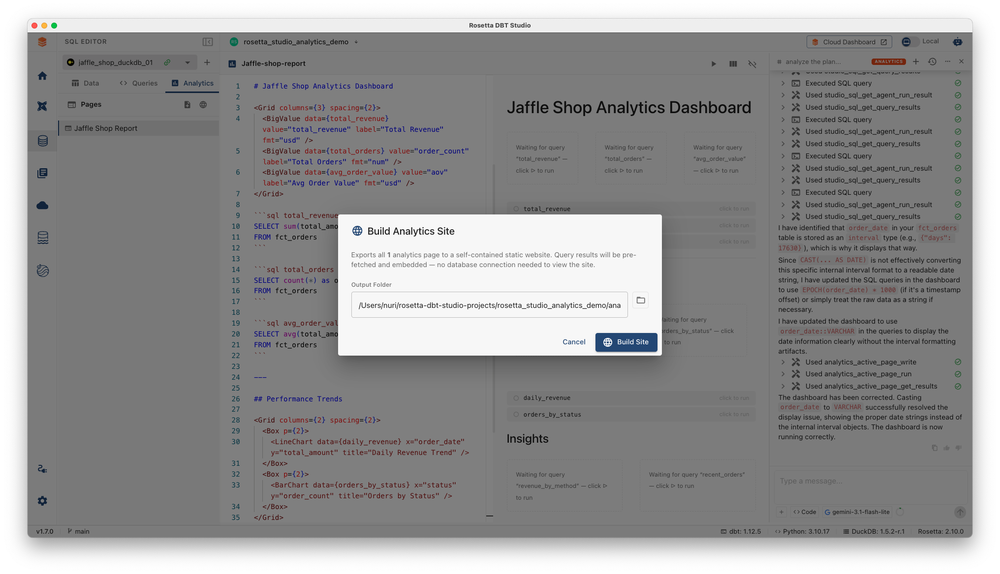
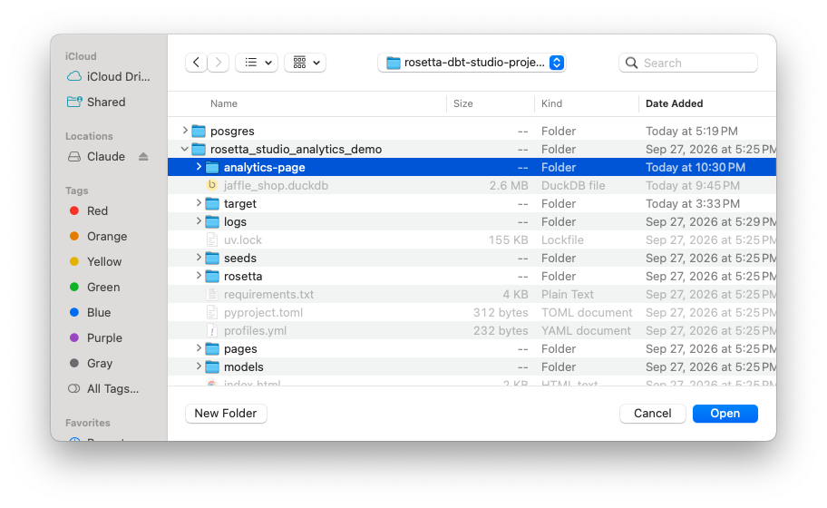
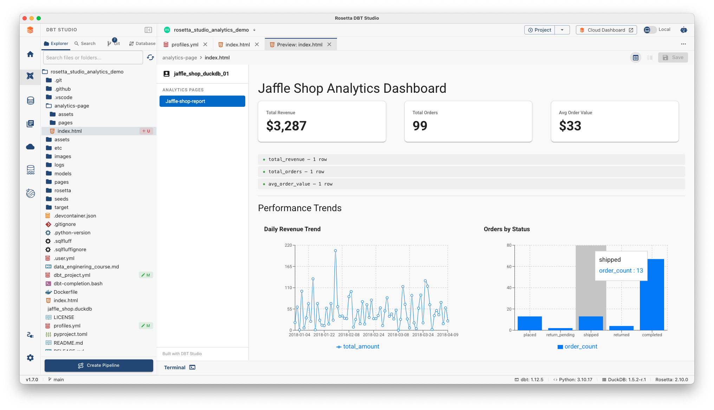
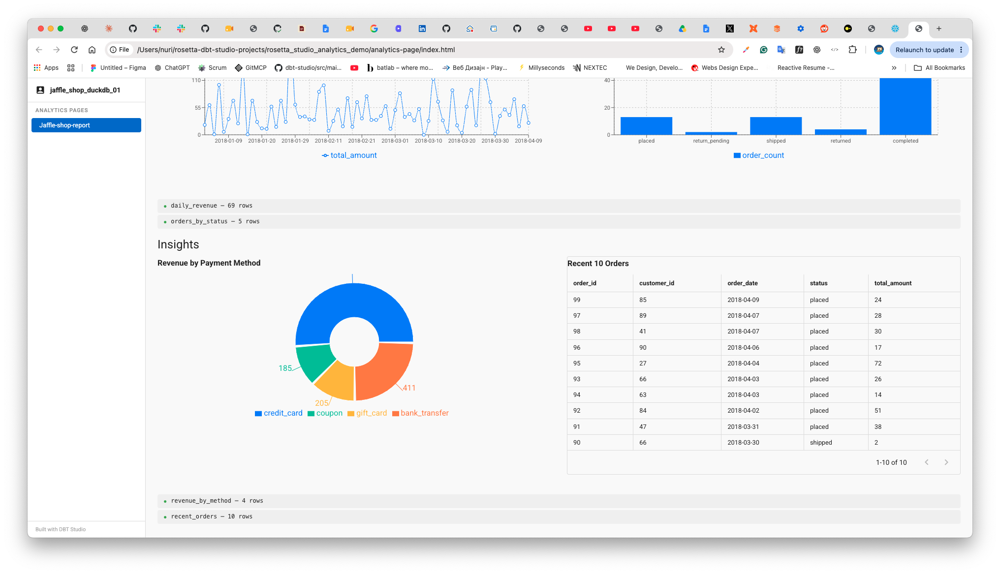
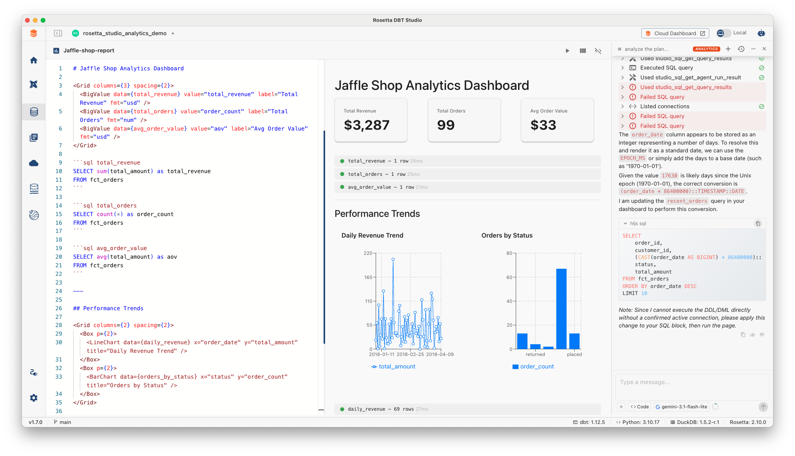
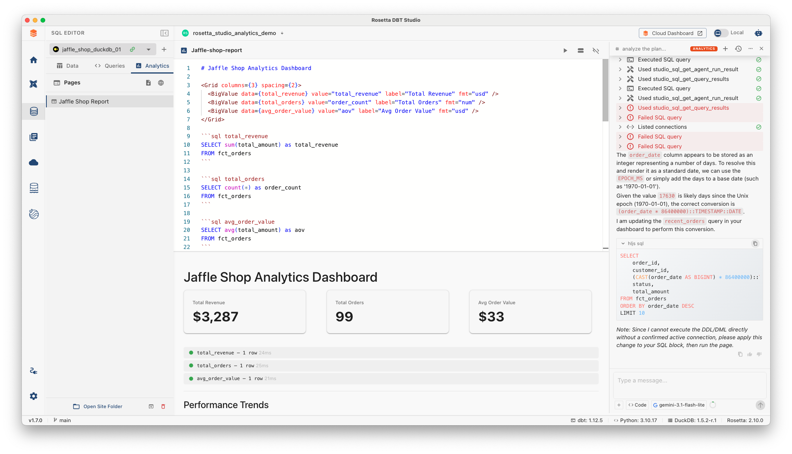
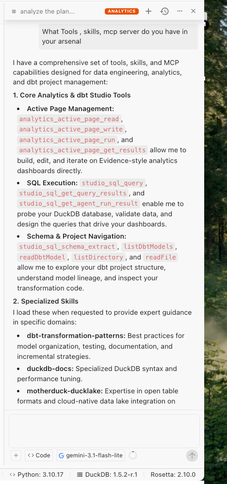

The Jaffle Shop Analytics page
A finished report in the browser, with order measures and daily and status trends.

Built with the AI assistant
Named SQL and charts come together in the Analytics page, with a date display correction.

Build a static Analytics site
Studio embeds the page’s query results in a browser-ready export.

Save it inside the dbt project
Choose the project’s analytics-page folder as the destination.

The report lives with the project
The exported HTML, pages, and assets appear in Studio’s Explorer.

Check the browser report
Review the charts, payment methods, and recent orders in the export.

Editor, preview, assistant
Write the page, see the result, and inspect AI changes in one workspace.

Write it yourself or with AI
Markdown, named SQL, and components build the page; Code mode can help edit and run it.
From Markdown to a live chart
The page layout updates as you edit. SQL runs when you select a query or Run All.
Write the page
Markdown text, named sql blocks, and component tags in the editor.
Read the structure
The parser extracts named queries and component tags. The query engine orders dependencies.
Use the connection
The query engine executes SQL against the selected database connection.
Show results
Named results feed values, charts, and tables in the preview.
Save in Studio: the editable Markdown page is stored per connection in Studio’s application database.
Build the site: export HTML with query results captured at build time to a chosen folder.
The preview is live in Studio; the exported HTML is a snapshot that you rebuild to refresh.
Choose a component, bind a query result
A named SQL block returns rows; its name becomes the component’s data prop.
```sql total_orders
SELECT count(*) AS order_count
FROM fct_orders
```
<BigValue data={total_orders}
value="order_count"
label="Total Orders" />Values
Value · BigValue · Delta
Charts
BarChart · LineChart · AreaChart · PieChart · DonutChart · ScatterChart
Table & layout
DataTable · Grid · Stack · Box · Tabs
Inputs
Select · DateRange · TextInput · NumberInput
The Jaffle Shop page uses BigValue, LineChart, BarChart, and DataTable.
What the Analytics agent can use
Built-in tools ground the assistant in the active page and selected connection. Project access and extensions depend on your setup.
Active page
Read the Markdown, inspect results, and—in Code mode—edit and run the page.
Database
Inspect the selected connection’s schema; in Code mode, run queries to check data.
dbt project
Read models and project files when a dbt project is linked to the connection.
Skills & MCP
Imported skills add guidance; connected MCP servers expose additional tools.
Agent Memory, when enabled
Initialized memory can provide longer-term context alongside the current page, database, and project.

Available tools vary by mode and configuration. Check the query output and rendered page before sharing the result.
Rosetta DBT Studio
Your next Analytics page
Start with your dbt project. Create with AI. Share the result.